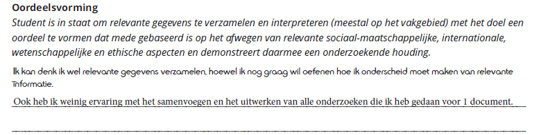
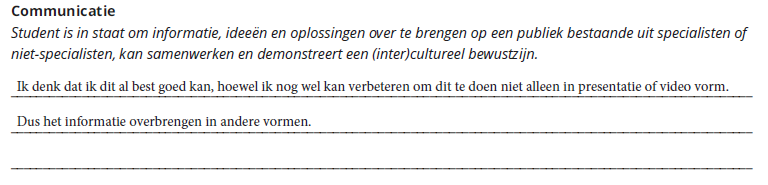
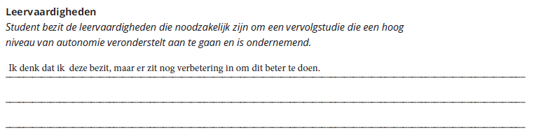

Ik heb aan het begin van het jaar leerdoelen voor mijzelf opgesteld die ik zelf wilde bereiken, deze is ook goed gekeurd door mijn semester coach en zal hier een korte reflectie per leerdoel doen.
Reflectie
Tot nu toe heb ik relevante informatie kunnen onderscheiden met niet relevanten. Het ging misschien aan het begin niet zo goed, ik periodiseerde niet altijd het goede product. Maar na elke sprint demo en feedback gekregen van de opdrachtgever kan ik nu zeggen wat relevante informatie is en wat ik ermee moet.
Dit hoop dit ook straks te kunnen aantonen bij producten die ik heb gemaakt uit gebruikerstesten, dat ik de relevante informatie vraag en hier iets mee doe.
Het alles samenvoegen en het uitwerken van de onderzoeken heb ik geoefend door een proces stapsgewijze uit te leggen bij sommige deelproducten. Niet alleen voor Media maar ik heb dit mijzelf ook aangeleerd bij bijvoorbeeld Game Design.

Ik heb hiervan geleerd dat de vorm van een presentatie of video, als ik dit goed doe, al goed is. Ik kreeg eerst het gevoel dat ik niet veel bereikte met deze vormen, maar door hier meer te hebben gewerkt dit semester weet ik wat de voordelen zijn van beide vormen en hoe goed ik dingen op deze methode kan overbrengen. Waarom dingen veranderen als ik ook beter in iets kan worden? En dat heb ik ook gedaan.

Ik dacht dat ik dat al bezitten, maar ik was zo verkeert. Ik heb dit semester hele nieuwe inzichten en dingen geleerd. Programmeren met ReactJS, beter leren video editen, after effects, hoe je op de goede en correcte manier een testplan opzet, design guidelines volgen, scrum met backlog en userstories en hoe ik in een online omgeving moet samenwerken met een team.